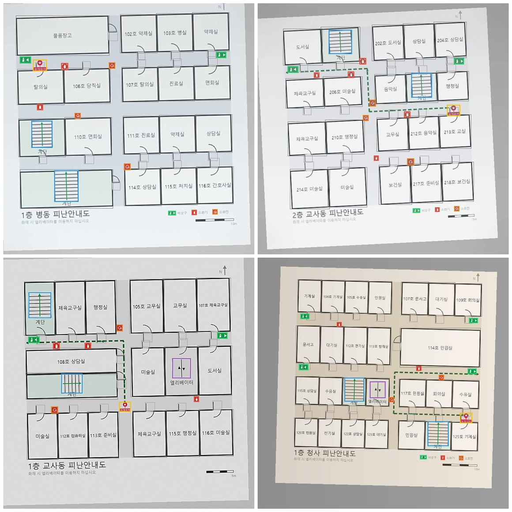
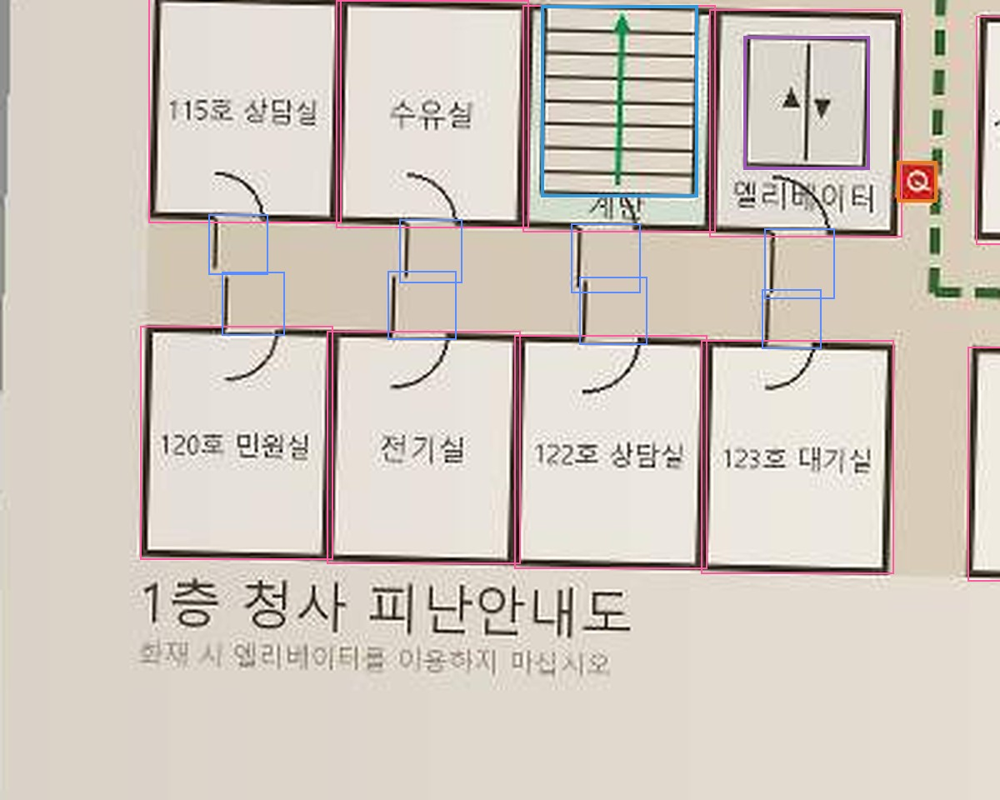
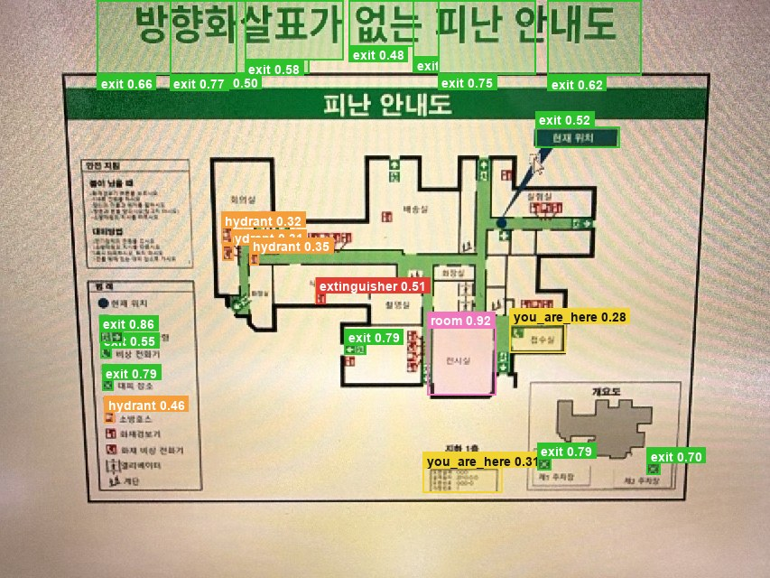
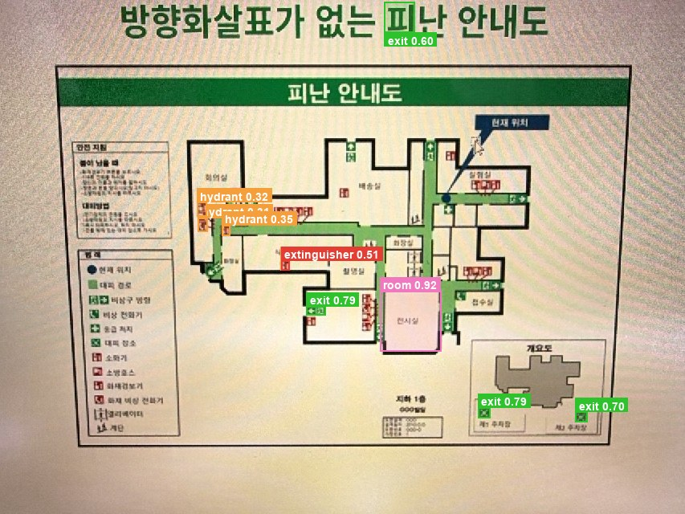
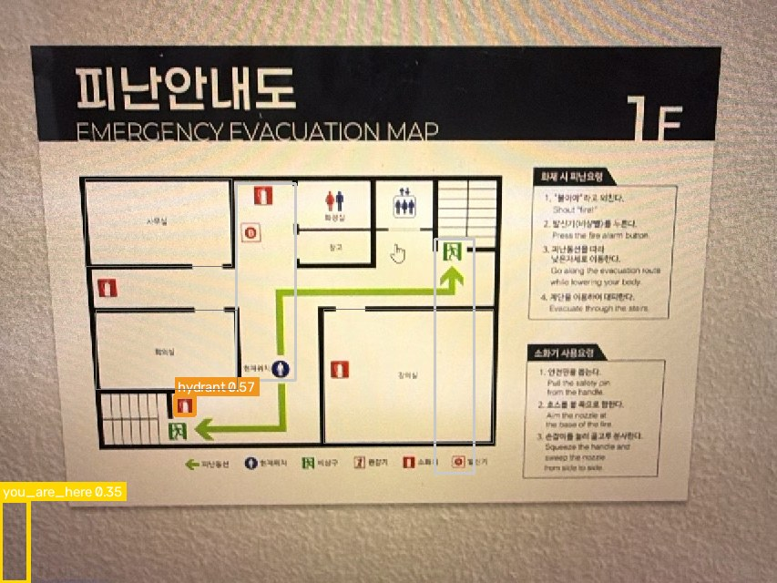

벽에 걸린 피난안내도 사진 한 장에서 비상구·계단·소화기를 찾아, 대피 경로 그래프의 좌표로 옮겨 적는 YOLO 탐지기. 학습 데이터, 검증 지표, 실제 사진에서의 거동을 모았다.
피난안내도에는 비상구도, 현 위치도, 피난경로 화살표도 이미 그려져 있다. 도면 등록은 없던 정보를 만드는 작업이 아니라, 그림으로만 있는 것을 좌표로 옮겨 적는 작업이다. 그런데 지금까지는 사람이 편집기에서 한 층에 20~30번을 클릭해 지점을 찍었고, 건물이 바뀌면 처음부터 다시 했다.
그 옮겨 적기를 모델에게 시킨다. 다만 좌표만이다 — 이름과 통로 연결은 언어모델이, 최종 확인은 사람이 맡는다.
| 담당 | 하는 일 | 못 하는 것 |
|---|---|---|
| 기호 탐지기 | 비상구·계단·실·문이 어디 있는지 | 글자를 못 읽고, 통로 연결을 모른다 |
| 언어모델 | 적힌 이름과 통로 연결 | 좌표가 눈대중이라 수십 px 어긋난다 |
| 사람 | 축척(m)과 최종 승인 | — 건너뛸 수 없게 막아 두었다 |
모델 결과는 저장되지 않는다. 편집기에 초안으로 올라올 뿐이고, 사람이 확인하고 저장을 눌러야 안내에 들어간다. 비상구를 하나 잘못 찍으면 시각장애인이 벽으로 걸어간다.
도면을 먼저 그리고 그리는 순간의 좌표를 그대로 정답으로 적는 방식이라 라벨 오차가 0이다. 사전학습용으로는 이 성질이 중요하다 — 실제 사진 100장에 밑라벨을 깔아 줄 모델이 애매한 라벨로 배우면 밑라벨도 애매해지고, 사람이 고칠 것이 늘어난다.
이 100장은 1부(사전학습) 데이터셋이다. 지금 서비스에 붙어 있는 가중치는 여기서 출발했지만, 마지막 학습(라운드 6)에서는 같은 방식으로 만든 500장(학습 350 · 검증 75 · 시험 75)을 썼다. 뒤에 나오는 클래스별 지표는 그 500장 기준이다. 생성기는 ml/generate_dataset.py에 있다.
| 항목 | 값 | 비고 |
|---|---|---|
| 이미지 | 100장 | 800×800 JPEG · 시드 20260814 고정 |
| 학습 / 검증 / 시험 | 70 / 20 / 10 | 장 단위 분할 |
| 라벨 상자 | 3,142개 | 장당 평균 31개 |
| 정답 대피 그래프 | 100개 | 지점 25 · 통로 24 · 출구 2.6 (평균) |
문·실이 도면의 뼈대라 수가 압도적이고, 정작 대피에 결정적인 비상구는 303개다. 게다가 800px 도면에서 비상구 픽토그램은 평균 31×19px, 소화기는 18px이다 — 이 작은 크기가 뒤에 나올 추론 해상도 결정을 그대로 좌우한다.
한 종류를 100번 그리면 100장이 아니라 1장이다. 네 축을 조합해 흩뜨렸다.


합성 도면은 배치와 기호 규칙까지는 실제와 같지만 종이 질감·유리 반사·형광등 빛·비스듬한 각도를 흉내내지 못한다. 그래서 합성으로 눈을 뜨게 한 뒤, 실제 대피안내도를 모아 사람이 검수한 라벨로 이어학습했다. 다만 마지막 라운드는 클래스 균형을 맞추려고 다시 합성으로 돌아갔다 — 그래서 지표를 읽는 법이 달라진다.
지표는 합성 검증셋에서 잰 값이다. 실제 도면은 라운드 2~4의 학습에 들어갔지만(사람이 검수한 라벨), 마지막 라운드 6의 학습·검증 500장은 전부 합성이다 — 검증 75장 하나하나에 8클래스가 정확히 같은 개수로 들어 있고 문(door)과 실(room) 개수가 딱 일치한다. 생성기의 규칙이지 실제 도면에서 나올 분포가 아니다. 뒤에 나오는 재현율 1.000을 실제 사진에서의 성능으로 읽으면 안 된다 — 실제 사진에서의 거동은 실측 절에서 따로 잰다.
yolo11n · 150 에폭 · imgsz=800 · batch=8 · patience=40 · 증강 degrees=5.0 translate=0.08 scale=0.35 mosaic=0.7 close_mosaic=20. 좌우·상하 뒤집기는 껐다 — 도면을 뒤집으면 글자가 거울상이 되어 실제로는 없는 그림을 배운다. T4 기준 20~30분.
1부 가중치를 한 번에 완성시키지 않고, 앞 라운드 결과를 받아 학습률과 증강을 조금씩 낮추며 다섯 번에 나눠 이어학습했다. 이어학습에서 크게 흔들면 앞 단계가 배운 것이 흐려지기 때문이다. 아래 값은 ml/training-records/*/args.yaml에 남은 실제 설정이다.
| 라운드 | 학습 데이터 | lr0 | 에폭 | imgsz | 낸 가중치 |
|---|---|---|---|---|---|
| 2 stage_a | 실제 대피안내도 + 사람 검수 라벨 | 0.0008 | 50 | 960 | |
| 4 stage_a | 라운드 2 사람검수 라벨 + 계단 보강 합성 | 0.0005 | 25 | 768 | |
| 4 stage_b | 위와 같음 | 0.00015 | 35 | 768 | round2_best.pt |
| 6 stage_a | 합성 500장 (전 클래스 균형) | 0.001 | 18 | 896 | stage_a_best.pt |
| 6 stage_b | 위와 같음 | 0.0002 | 30 | 896 | stage_b_best.pt |
라운드 3에서 공개 라이선스 실제 대피안내도를 더 모았고, 갈래가 둘이었다 — 사람이 검수한 critical과 자동 pseudo-label만 쓴 auto다. 노트북이 직접 적어 두었듯 auto 갈래의 점수는 검증셋마저 자동 라벨이라 참고값이다. 라운드 5는 비상구 재현율만 따로 올려 보려던 갈래인데 라운드 6이 그 역할을 대신해 서비스에는 쓰지 않았다. 기록은 모두 ml/training-records/에 남겨 두었다.
한 벌로 여덟 종류를 다 학습시켰더니 일부 클래스가 서로를 잡아먹었다. 그래서 라운드를 나눠 학습시키고 각 라운드가 자신 있는 클래스만 맡는다. 결과를 합친 뒤 클래스별 NMS(IoU 0.5)로 중복을 정리한다.
클래스 순서 0~7은 모든 모델이 같아야 한다. 순서가 한 칸 밀리면 "비상구"라고 찍은 것이 실제로는 "소화기"가 되고, 그 오류는 도면이 저장된 뒤에야 드러난다. 그래서 서비스가 뜰 때 순서를 검사하고, 어긋나면 아예 뜨지 않는다.
아래는 가중치 파일 안에 저장된 train_args를 그대로 읽은 값이고, ml/training-records/의 args.yaml과 11개 항목이 전부 일치하는 것을 확인했다. 학습 노트북도 ml/notebooks/에 있으므로 어느 실행이 어느 가중치를 냈는지까지 따라갈 수 있다.
| 가중치 | 이어받은 곳 | 에폭 | imgsz | lr0 | 동결 | mosaic | fliplr | 학습일 |
|---|---|---|---|---|---|---|---|---|
round2_best.pt | round4 stage_a | 35 | 768 | 0.00015 | 0 | 1.0 | 0.5 | 2026-08-17 |
stage_a_best.pt | round2_best.pt | 18 | 896 | 0.001 | 10 | 0.2 | 0.15 | 2026-08-18 |
stage_b_best.pt | stage_a_best.pt | 30 | 896 | 0.0002 | 0 | 0.1 | 0.1 | 2026-08-18 |
세 벌 모두 yolo11n 구조(파라미터 2,591,400개)에 nc=8이고, 앞 단계 가중치를 이어받아 학습됐다. 뒤로 갈수록 학습률과 증강을 줄이는데, 이어학습에서 증강을 세게 두면 앞 단계가 배운 것이 흐려지기 때문이다.
좌우 뒤집기가 어느 라운드에서 되살아났다. 1부 노트북에는 fliplr=0.0이 이유까지 주석으로 적혀 있는데, 서비스에 붙은 세 벌은 모두 켜져 있다(0.5 · 0.15 · 0.1). 노트북을 따라가 보면 원칙을 뒤집은 것이 아니라 라운드 4에서 이 한 줄을 빠뜨려 Ultralytics 기본값 0.5가 되살아난 것이었다(라운드 3까지는 0.0 명시, 라운드 6은 .15·.10으로 적었으나 0으로 되돌리지 않음). 도면을 좌우로 뒤집으면 글자가 거울상이 되므로 끄는 쪽이 맞다. 상하 뒤집기(flipud)는 세 벌 모두 0이다. 다음 학습에서는 기본값에 기대지 말고 명시해야 한다 — 기본값에 기댔기 때문에 이 일이 났다.
최신 학습(라운드 6)에서는 모델 세 벌을 놓고 클래스마다 가장 잘하는 한 벌을 골라 라우팅 표로 굳혔다. 확신도 문턱은 전 클래스 공통 0.75다.
이 표가 지금 서비스에 붙어 있는 것 그대로다. 배정을 코드에 박지 않고 ml/detector/models/class_router.json을 읽어 따르게 했다 — 재학습으로 담당이 바뀌었는데 파이썬 상수를 같이 고치는 걸 잊으면, 서비스는 멀쩡히 뜨고 틀린 모델이 낸 결과가 그대로 편집기로 간다. 그 어긋남은 아무도 알아채지 못한다. GET /health가 지금 적용된 담당 표를 그대로 돌려준다.
| # | 클래스 | 담당 모델 | 검증 재현율 | TP / FP / FN | 시험 재현율 | TP / FP / FN |
|---|---|---|---|---|---|---|
| 0 | 비상구 exit | round2 | 1.000 | 150 / 0 / 0 | 1.000 | 150 / 0 / 0 |
| 1 | 계단 stair | round2 | 1.000 | 75 / 0 / 0 | 1.000 | 75 / 0 / 0 |
| 2 | 승강기 elevator | round2 | 1.000 | 75 / 0 / 0 | 1.000 | 75 / 0 / 0 |
| 3 | 소화기 extinguisher | stage_b | 0.991 | 113 / 0 / 1 | 0.965 | 109 / 0 / 4 |
| 4 | 소화전 hydrant | stage_b | 0.991 | 112 / 0 / 1 | 1.000 | 115 / 0 / 0 |
| 5 | 현위치 you_are_here | round2 | 1.000 | 75 / 0 / 0 | 1.000 | 75 / 0 / 0 |
| 6 | 출입문 door | stage_a | 1.000 | 782 / 0 / 0 | 1.000 | 779 / 0 / 0 |
| 7 | 실 room | round2 | 1.000 | 782 / 0 / 0 | 1.000 | 779 / 0 / 0 |
정밀도는 8클래스 모두 1.000, 거짓양성 0건이다. 재현율도 소화기 시험 0.965를 제외하면 전부 1.000 — 놓친 객체가 검증에서 2개, 시험에서 4개뿐이다.
재현율을 먼저 보는 이유. mAP가 아니라 클래스별 재현율을 지표로 삼았다. 없는데 있다고 나온 비상구는 사람이 편집기에서 금방 알아채지만, 있는데 없다고 나온 비상구는 아무도 알아채지 못한 채 저장된다. 그래서 문턱도 낮게(서비스 0.25) 잡아 많이 건지고, 걸러내는 일을 사람과 규칙에 맡긴다.
이 표는 상한으로 읽어야 한다. 분할 구성은 이제 저장소에 있다(ml/training-records/data/round6_split_report.json) — 학습 350장 · 검증 75장 · 시험 75장이고, 위 표의 TP+FN 이 그 분할의 상자 수와 8클래스 × 검증·시험 16개 값 전부 맞는다. 다만 그 500장이 모두 합성 도면이다 — 검증 75장 하나하나에 8클래스가 빠짐없이 들어 있는데, 실제 촬영본에서는 그런 분포가 나오지 않는다. 합성이 섞인 점수는 실제 성능보다 항상 높게 나온다 — 실제 사진에서의 거동은 아래 절에서 따로 잰다.
피난안내도의 비상구 픽토그램은 도면 전체 대비 아주 작다. 853px 사진에서 픽토그램 하나가 12~26px인데, 768로 줄여 추론하면 10px 안팎이 되어 모델이 사실상 못 본다. 같은 사진(촬영도면/draft-1-1.jpg, 853×640)을 해상도만 바꿔 재면:
| 추론 해상도 | 탐지 수 | 비상구 최고 확신도 | CPU 소요 |
|---|---|---|---|
| 768 px | 10 | 0.529 | 0.41초 |
| 1280 px 채택 | 25 | 0.864 | 1.22초 |
1920까지 올리면 탐지가 더 늘지만 you_are_here 오탐이 폭발한다(실제 1개 → 13개). 1280이 지금 가중치에서의 균형점이다.
모델은 초록 픽토그램을 찾도록 학습됐고 실제로 잘 찾는다. 문제는 도면에 픽토그램처럼 생긴 것이 세 군데 있다는 점이다: 도면 안(우리가 원하는 것), 범례("■ 비상구 방향" 같은 설명), 제목·초록 띠(초록 바탕이라 통째로 비상구로 잡힌다). 뒤 둘은 모델이 못 배운 것이 아니라 아무도 가르친 적이 없는 구분이다.
재학습으로도 고칠 수 있지만, 백엔드에 걸름망 둘을 두어 지금 가진 가중치 그대로 해결했다. ① 크기 — 픽토그램은 도면 폭의 6%를 넘지 않는다. ② 배치 — 좁은 세로 띠에 여러 종류가 줄지어 있으면 그건 설명란이다.


범례를 걸러내지 않으면 무슨 일이 생기나. 대피 경로의 출구가 범례 상자 안에 생기고, 시각장애인이 벽에 걸린 안내판 앞으로 안내된다. 걸름망은 미관 문제가 아니라 안전 문제다.
탐지기가 좌표를 찍고 언어모델이 이름과 통로를 얹은 뒤, 사람이 확인한다. 정답을 아는 시험 도면(AI공학관 3층, 비상구 2곳·복도 교차점)으로 잰 값이다.
| 입력 | 지점 정확도 | 비상구 위치 오차 | 교차점 오차 | 시간 |
|---|---|---|---|---|
| 깨끗한 도면 이미지 | 4 / 4 | 1.0% | 0.7% | 15초 |
| 폰 사진처럼 (3.5° 기울기 · 반사광 · 흐림 · JPEG 70%) | 4 / 4 | 0.4~0.9% | 1.1% | 19초 |
사진이 망가져도 정확도가 거의 안 떨어졌다 — 피난안내도가 선·색 위주의 규격 그림이라 압축·흐림에 강한 덕이다. 실제 사진(AI공학관 3층, 1100×744)에서는 CPU 3.5초에 지점 16곳·통로 16개를 얻었고, 이는 손으로 찍었던 15곳과 비슷한 수다. 읽어낸 도면을 그대로 저장·활성화해 경로 계산까지 확인했다: 301 강의실 → 서쪽 복도 교차점 → 서쪽 비상구 계단 (12.75m)

round2_best.pt(비상구·계단·승강기·현위치·실 담당)는 그 앞 라운드의 실제 도면 학습을 물려받았지만, stage_a·stage_b(문·소화기·소화전)의 마지막 조정은 합성에서만 이뤄졌다.stair로 찍어 온다. 대피 목표가 되는 건 exit뿐이라 그대로 두면 갈 곳이 없어진다. exit이 하나도 없으면 stair를 승격시키되 반드시 경고한다 — 옥상 전용 계단이 섞였을 수 있고 그건 사람만 안다.ml/generate_dataset.py)가 들어와 같은 시드로 다시 만들 수는 있지만, 라운드 6이 쓴 500장은 그 생성기의 기본값(100장)과 다른 설정으로 만든 것이라 그대로 재현되지 않는다.aboveThreshold로 함께 내려보낸다. 재현율은 문턱을 낮췄으니 위 값 아래로 내려가지 않지만, 정밀도는 위 표보다 낮다.